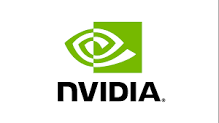
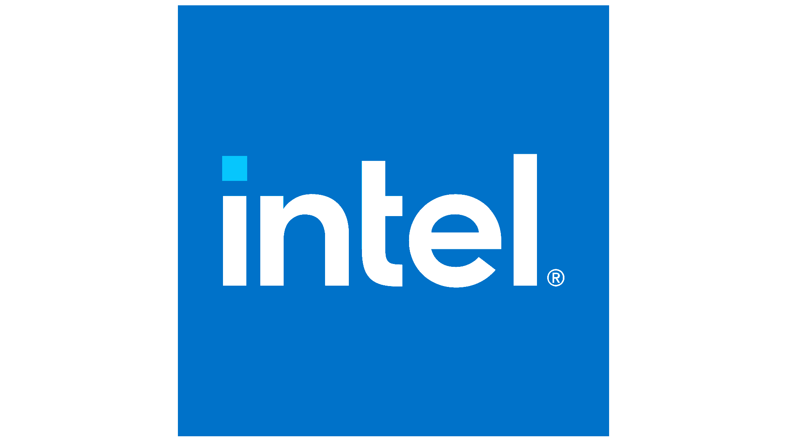

חברות הסיור 1–3

חברה 1
Microsoft
☁️ ענן וכלי עבודה להרבה משתמשים
מה אפשר ללמוד מזה למיזם שלנו?
מיזם טוב צריך תשתית: מקום שבו המוצר עובד, נשמר ומגיע למשתמשים.
מיזם טוב צריך תשתית: מקום שבו המוצר עובד, נשמר ומגיע למשתמשים.

חברה 2
NVIDIA
⚡ כוח חישוב
מה אפשר ללמוד מזה למיזם שלנו?
מיזם טכנולוגי צריך לחשוב מה מפעיל אותו מאחורי הקלעים.
מיזם טכנולוגי צריך לחשוב מה מפעיל אותו מאחורי הקלעים.

חברה 3
Intel
🔲 חומרה ושבבים
מה אפשר ללמוד מזה למיזם שלנו?
גם רעיון חכם צריך “גוף”: מחשב, טאבלט, שרת או מכשיר שמריץ אותו.
גם רעיון חכם צריך “גוף”: מחשב, טאבלט, שרת או מכשיר שמריץ אותו.
עמדות נלוות
עמדת שלוקים / טעינת ענן
מטרה
לבחור למי המיזם שלכם מיועד.
לבחור למי המיזם שלכם מיועד.
משימה
בחרו ילד או ילדה שהמיזם שלכם יכול לעזור להם.
בחרו ילד או ילדה שהמיזם שלכם יכול לעזור להם.
קלפי משתמש — למי אנחנו בונים?
ילד/ה שרוצה למצוא חוג או תחביב חדש ולא יודע/ת מה מתאים לו/ה
ילד/ה שמתבייש/ת לשאול בכיתה וצריך/ה דרך בטוחה לבקש עזרה
ילד/ה שאוהב/ת משחקים ורוצה ללמוד משהו דרך משחק
ילד/ה שמתקשה לארגן שיעורים, מבחנים ומשימות
ילד/ה שרוצה לעשות משהו טוב לסביבה או לקהילה ולא יודע/ת מאיפה להתחיל
מה כותבים בחוברת?
המיזם שלנו מיועד ל־ _______________________________
הוא צריך עזרה ב־ _______________________________